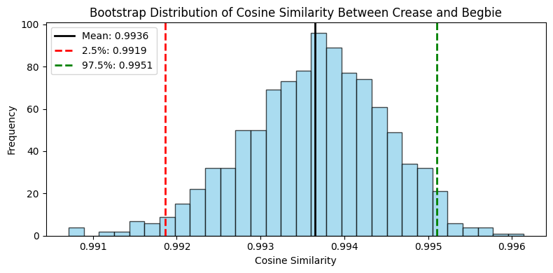
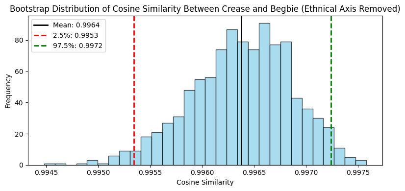

import pandas as pdimport numpy as np# Load the datasetdf = pd.read_csv("../data/metadata.csv")df.head()
filename
author
type
text
0
regina_v_wing_chong.txt
Crease
case
CREASE, J. 1885. REGINA v. WING CHONG. \r\n\r\...
1
wong_hoy_woon_v_duncan.txt
Crease
case
CREASE, J.\r\n\r\nWONG HOY WOON v. DUNCAN.\r\n...
2
regina_v_mee_wah.txt
Begbie
case
BRITISH COLUMBIA REPORTS.\r\n\r\nREGINA v. MEE...
3
regina_v_victoria.txt
Begbie
case
OF BRITISH COLUMBIA.\r\n\r\nREGINA r, CORPORAT...
4
quong_wing_v_the_king.txt
Fitzpatrick
case
QUONG WING v. THE KING. CAN. \r\n\r\nSupreme ...
Naive Word Embedding Analysis
# Define a function to clean the textimport redef clean_text(text): text = text.lower() text = re.sub(r'[^\w\s]', '', text) # Remove punctuationreturn text.strip()
from nltk.tokenize import word_tokenize# Create the large corpus by joining all text from all authorsall_text =" ".join(df["text"].tolist())clean_text = clean_text(all_text)
# Load the tokenizer and model from Hugging Facefrom transformers import AutoTokenizer, AutoModelimport torch# We will use the Legal-BERT model for this tasktokenizer = AutoTokenizer.from_pretrained('nlpaueb/legal-bert-base-uncased')model = AutoModel.from_pretrained('nlpaueb/legal-bert-base-uncased')# set the model to evaluation modemodel.eval()
# Create the word embeddings# Tokenize the cleaned text into wordstokens = word_tokenize(clean_text)# Get unique words to avoid redundant computationunique_tokens =list(set(tokens))# Print the shape of unique tokensprint(f'There are {len(unique_tokens)} unique tokens in this corpus.')
There are 4905 unique tokens in this corpus.
# Prepare a dictionary to store word embeddingsword_embeddings = {}# Batch processing for efficiencybatch_size =32batches = [unique_tokens[i:i + batch_size] for i inrange(0, len(unique_tokens), batch_size)]for batch in batches:# Tokenize the batch batch_inputs = tokenizer(batch, return_tensors='pt', padding=True, truncation=True, max_length=10)with torch.no_grad(): batch_outputs = model(**batch_inputs)# Use the [CLS] token embedding as the word embeddingfor i, word inenumerate(batch): word_embedding = batch_outputs.last_hidden_state[i, 0, :].numpy() word_embeddings[word] = word_embedding
c:\Users\Kaiyan Zhang\AppData\Local\Programs\Python\Python312\Lib\site-packages\torch\nn\modules\module.py:1762: FutureWarning: `encoder_attention_mask` is deprecated and will be removed in version 4.55.0 for `BertSdpaSelfAttention.forward`.
return forward_call(*args, **kwargs)
# Print embedding for the word of interest 'chinese'print(f"Embedding for 'chinese':\n{word_embeddings.get('chinese')}")
# Compute cosine similarity between all words with Chinese in the modelfrom scipy.spatial.distance import cosinesimilarity_scores = {}for other_word in word_embeddings.keys():if other_word !="chinese": similarity =1- cosine(word_embeddings["chinese"], word_embeddings[other_word]) similarity_scores[other_word] = similarity# Sort by cosine similaritysorted_similarity =sorted(similarity_scores.items(), key=lambda x: x[1], reverse=True)# Print the top 10 most similar wordsprint("Top 10 most similar words to 'chinese':")for word, score in sorted_similarity[:10]:print(f"{word}: {score:.4f}")
Top 10 most similar words to 'chinese':
japanese: 0.8790
chong: 0.8652
alien: 0.8581
fourteen: 0.8564
jaw: 0.8557
king: 0.8519
hong: 0.8516
contradiction: 0.8485
cousin: 0.8480
inferior: 0.8472
# Compute cosine similarity between all words with Chinaman in the modelsimilarity_scores = {}for other_word in word_embeddings.keys():if other_word !="chinaman": similarity =1- cosine(word_embeddings["chinaman"], word_embeddings[other_word]) similarity_scores[other_word] = similarity# Sort by cosine similaritysorted_similarity =sorted(similarity_scores.items(), key=lambda x: x[1], reverse=True)# Print the top 10 most similar wordsprint("Top 10 most similar words to 'chinaman'")for word, score in sorted_similarity[:10]:print(f"{word}: {score:.4f}")
Top 10 most similar words to 'chinaman'
provei: 0.9922
clamor: 0.9916
totally: 0.9916
today: 0.9914
chinamen: 0.9911
interred: 0.9910
unequalled: 0.9909
surely: 0.9906
semitropical: 0.9904
quickly: 0.9904
# Generate a t-SNE plot for visualizationfrom sklearn.manifold import TSNEtsne = TSNE(n_components=2, random_state=42)embeddings = np.array(list(word_embeddings.values()))tsne_results = tsne.fit_transform(embeddings)
# Create a DataFrame for visualizationimport plotly.express as pxdf_tsne = pd.DataFrame(tsne_results, columns=['x', 'y'])df_tsne['word'] =list(word_embeddings.keys())# Highlight the word 'chinese' in the plotkeywords = ["chinese", "china", "chinaman", "chinamen"]df_tsne['highlight'] = df_tsne['word'].apply(lambda x: x if x in keywords else'')fig = px.scatter( df_tsne, x='x', y='y', title='t-SNE Visualization of legal-BERT Word Embeddings', color='highlight', hover_data=['word'], text='highlight', height=600, width=800)fig.show()
c:\Users\Kaiyan Zhang\AppData\Local\Programs\Python\Python312\Lib\site-packages\plotly\express\_core.py:1983: FutureWarning: When grouping with a length-1 list-like, you will need to pass a length-1 tuple to get_group in a future version of pandas. Pass `(name,)` instead of `name` to silence this warning.
sf: grouped.get_group(s if len(s) > 1 else s[0])
Unable to display output for mime type(s): application/vnd.plotly.v1+json
Text Embedding and Analysis of Crease and Begbie Corpus
# Compile the Crease texts into a single text listcrease_texts = df[df['author'] =='Crease']['text'].tolist()# Compile the Begbie texts into a single text listbegbie_texts = df[df['author'] =='Begbie']['text'].tolist()# Combine both lists in a dictionaryjudge_dict = {'Crease': crease_texts,'Begbie': begbie_texts}
# Define a function to embed text using the modelfrom typing import Union, Listdef embed_text( text: str, focus_token: Union[str, List[str]] =None, window: int=5, tokenizer=tokenizer, model=model)-> np.ndarray:""" text: the raw string focus_token: either a single word, or a list of words to look for window: how many tokens on each side to include tokenizer: HuggingFace tokenizer model: BERT model """# Run the model once inputs = tokenizer(text, return_tensors="pt", truncation=True)with torch.no_grad(): outputs = model(**inputs) hidden = outputs.last_hidden_state.squeeze(0) if focus_token isNone:return hidden[0].cpu().numpy()# Normalize to list keywords = ( [focus_token] ifisinstance(focus_token, str)else focus_token )# Pre-tokenize each keyword to its subtoken ids kw_token_ids = { kw: tokenizer.convert_tokens_to_ids(tokenizer.tokenize(kw))for kw in keywords } input_ids = inputs["input_ids"].squeeze(0).tolist() spans = [] # list of (start, end) index pairs# find every match of every keywordfor kw, sub_ids in kw_token_ids.items(): L =len(sub_ids)for i inrange(len(input_ids) - L +1):if input_ids[i:i+L] == sub_ids: spans.append((i, i+L))ifnot spans:# fallback on CLS vectorreturn hidden[0].cpu().numpy()# For each span, grab the window around it vecs = []for (start, end) in spans: lo =max(1, start - window) hi =min(hidden.size(0), end + window)# mean‑pool over all tokens in this extended window span_vec = hidden[lo:hi].mean(dim=0).cpu().numpy() vecs.append(span_vec)# Average across all spansreturn np.mean(np.stack(vecs, axis=0), axis=0)
from nltk import sent_tokenize # Create a dictionary to hold the mentionings of "Chinese" by authorjudge_snippets = {}keywords = ["Chinese", "China", "Chinaman", "Chinamen", "immigrant", "immigrants", "immigration"]for auth, texts in judge_dict.items(): snippets = []for txt in texts: sentence = sent_tokenize(txt)for sent in sentence:ifany(keyword in sent for keyword in keywords): snippets.append(sent) judge_snippets[auth] = snippets
# Investigate the length of the snippetsn_snippet = {auth: len(snippets) for auth, snippets in judge_snippets.items()}print("Snippet size by author:")for auth, num in n_snippet.items():print(f"{auth}: {num}")
Snippet size by author:
Crease: 146
Begbie: 108
# Define an ethnicity anchor, not including "chinese"ethnicities = ["Japanese", "Korean", "Vietnamese","Filipino", "Thai", "Malay", "Indian","Pakistani", "Bangladeshi","Nepalese", "Tibetan","Arab", "Persian", "Turkish", "Slavic","Germanic", "Celtic", "Slavic", "Romani","Jewish", "Zulu", "Xhosa", "Maori","Sami", "Berber", "Tamil", "Punjabi","Bengali", "Kazakh", "Uyghur"]# Create embeddingseth_vecs = []for e in ethnicities: eth_vecs.append(embed_text(e))eth_anchor = np.mean(eth_vecs, axis=0)
c:\Users\Kaiyan Zhang\AppData\Local\Programs\Python\Python312\Lib\site-packages\torch\nn\modules\module.py:1762: FutureWarning:
`encoder_attention_mask` is deprecated and will be removed in version 4.55.0 for `BertSdpaSelfAttention.forward`.
# Create embeddingsembeddings_dict = {'Crease': [], 'Begbie': []}for auth, snippets in judge_snippets.items():for snip in snippets: v = embed_text(snip, focus_token=keywords, window=15) embeddings_dict[auth].append(v)
# Create embeddings that subtract the ethnicity anchorsubtracted_embeddings_dict = {'Crease': [], 'Begbie': []}for auth, embeddings in embeddings_dict.items():for emb in embeddings: v = emb - eth_anchor subtracted_embeddings_dict[auth].append(v)
from sklearn.metrics.pairwise import cosine_similarity# Compute per author mean and cosine similaritymean_crease = np.mean(embeddings_dict["Crease"], axis=0, keepdims=True) mean_begbie = np.mean(embeddings_dict["Begbie"], axis=0, keepdims=True)# Compute the pairwise cosine similaritysim_crease_begbie = cosine_similarity(mean_crease, mean_begbie)[0, 0] print(f"Cosine similarity between Crease and Begbie: {sim_crease_begbie:.4f}")
Cosine similarity between Crease and Begbie: 0.9948
# Compute per author mean and cosine similaritysubtracted_mean_crease = np.mean(subtracted_embeddings_dict["Crease"], axis=0, keepdims=True) subtracted_mean_begbie = np.mean(subtracted_embeddings_dict["Begbie"], axis=0, keepdims=True)# Compute the pairwise cosine similaritysim_crease_begbie_sub = cosine_similarity(subtracted_mean_crease, subtracted_mean_begbie)[0, 0] print(f"Cosine similarity between Crease and Begbie with ethical axis removed: {sim_crease_begbie_sub:.4f}")
Cosine similarity between Crease and Begbie with ethical axis removed: 0.9971
# We check if the cosine similarity is lower when one subtracted the ethnicity anchor but not the othersim_crease_sub_begbie = cosine_similarity(mean_crease, subtracted_mean_begbie)[0, 0]sim_sub_crease_begbie = cosine_similarity(subtracted_mean_crease, mean_begbie)[0, 0]print(f"Cosine similarity between Crease and Begbie with Begbie removed ethnical axis: {sim_crease_sub_begbie:.4f}")print(f"Cosine similarity between Crease and Begbie with Crease removed ethnical axis: {sim_sub_crease_begbie:.4f}")
Cosine similarity between Crease and Begbie with Begbie removed ethnical axis: 0.6105
Cosine similarity between Crease and Begbie with Crease removed ethnical axis: 0.6063
# We check the cosine similarity of max and min embeddingsmax_crease = np.max(embeddings_dict["Crease"], axis=0, keepdims=True)min_crease = np.min(embeddings_dict["Crease"], axis=0, keepdims=True)max_begbie = np.max(embeddings_dict["Begbie"], axis=0, keepdims=True)min_begbie = np.min(embeddings_dict["Begbie"], axis=0, keepdims=True)sim_crease_begbie_max = cosine_similarity(max_crease, max_begbie)[0, 0]sim_crease_begbie_min = cosine_similarity(min_crease, min_begbie)[0, 0]print(f"Cosine similarity between max Crease and max Begbie: {sim_crease_begbie_max:.4f}")print(f"Cosine similarity between min Crease and min Begbie: {sim_crease_begbie_min:.4f}")
Cosine similarity between max Crease and max Begbie: 0.9785
Cosine similarity between min Crease and min Begbie: 0.9843
import matplotlib.pyplot as plt# We can bootstrap the similarity score to get a confidence intervalcrease_embeddings = np.array(embeddings_dict["Crease"])begbie_embeddings = np.array(embeddings_dict["Begbie"])# Convert to arrayscrease_embeddings = np.vstack(crease_embeddings)begbie_embeddings = np.vstack(begbie_embeddings)n_boot =1000cosine_scores = []for _ inrange(n_boot):# Sample with replacement crease_sample = crease_embeddings[np.random.choice(len(crease_embeddings), size=len(crease_embeddings), replace=True)] begbie_sample = begbie_embeddings[np.random.choice(len(begbie_embeddings), size=len(begbie_embeddings), replace=True)]# Compute mean embeddings mean_crease_boot = np.mean(crease_sample, axis=0, keepdims=True) mean_begbie_boot = np.mean(begbie_sample, axis=0, keepdims=True)# Compute cosine similarity cos_sim = cosine_similarity(mean_crease_boot, mean_begbie_boot)[0][0] cosine_scores.append(cos_sim)# Convert to numpy arraycosine_scores = np.array(cosine_scores)# Compute 95% confidence intervallower = np.percentile(cosine_scores, 2.5)upper = np.percentile(cosine_scores, 97.5)mean_sim = np.mean(cosine_scores)# Plot the bootstrap distributionplt.figure(figsize=(8, 4))plt.hist(cosine_scores, bins=30, color='skyblue', edgecolor='black', alpha=0.7)# Add lines for mean and confidence intervalplt.axvline(mean_sim, color='black', linestyle='-', linewidth=2, label=f'Mean: {mean_sim:.4f}')plt.axvline(lower, color='red', linestyle='--', linewidth=2, label=f'2.5%: {lower:.4f}')plt.axvline(upper, color='green', linestyle='--', linewidth=2, label=f'97.5%: {upper:.4f}')plt.title('Bootstrap Distribution of Cosine Similarity Between Crease and Begbie')plt.xlabel('Cosine Similarity')plt.ylabel('Frequency')plt.legend()plt.tight_layout()plt.show()# Print the resultsprint(f"Bootstrap mean cosine similarity between Crease and Begbie: {mean_sim:.4f}")print(f"95% Confidence Interval: [{lower:.4f}, {upper:.4f}]")

Bootstrap mean cosine similarity between Crease and Begbie: 0.9936
95% Confidence Interval: [0.9919, 0.9951]
# Similarly, bootstrap the similarity score to get a confidence intervalcrease_embeddings = np.array(subtracted_embeddings_dict["Crease"])begbie_embeddings = np.array(subtracted_embeddings_dict["Begbie"])# Convert to arrayscrease_embeddings = np.vstack(crease_embeddings)begbie_embeddings = np.vstack(begbie_embeddings)n_boot =1000subtracted_cosine_scores = []for _ inrange(n_boot):# Sample with replacement crease_sample = crease_embeddings[np.random.choice(len(crease_embeddings), size=len(crease_embeddings), replace=True)] begbie_sample = begbie_embeddings[np.random.choice(len(begbie_embeddings), size=len(begbie_embeddings), replace=True)]# Compute mean embeddings mean_crease_boot = np.mean(crease_sample, axis=0, keepdims=True) mean_begbie_boot = np.mean(begbie_sample, axis=0, keepdims=True)# Compute cosine similarity cos_sim = cosine_similarity(mean_crease_boot, mean_begbie_boot)[0][0] subtracted_cosine_scores.append(cos_sim)# Convert to numpy arraysubtracted_cosine_scores = np.array(subtracted_cosine_scores)# Compute 95% confidence intervallower = np.percentile(subtracted_cosine_scores, 2.5)upper = np.percentile(subtracted_cosine_scores, 97.5)mean_sim = np.mean(subtracted_cosine_scores)# Plot the bootstrap distributionplt.figure(figsize=(8, 4))plt.hist(subtracted_cosine_scores, bins=30, color='skyblue', edgecolor='black', alpha=0.7)# Add lines for mean and confidence intervalplt.axvline(mean_sim, color='black', linestyle='-', linewidth=2, label=f'Mean: {mean_sim:.4f}')plt.axvline(lower, color='red', linestyle='--', linewidth=2, label=f'2.5%: {lower:.4f}')plt.axvline(upper, color='green', linestyle='--', linewidth=2, label=f'97.5%: {upper:.4f}')plt.title('Bootstrap Distribution of Cosine Similarity Between Crease and Begbie (Ethnical Axis Removed)')plt.xlabel('Cosine Similarity')plt.ylabel('Frequency')plt.legend()plt.tight_layout()plt.show()# Print the resultsprint(f"Bootstrap mean cosine similarity between Crease and Begbie with ethnical axis removed: {mean_sim:.4f}")print(f"95% Confidence Interval: [{lower:.4f}, {upper:.4f}]")

Bootstrap mean cosine similarity between Crease and Begbie with ethnical axis removed: 0.9964
95% Confidence Interval: [0.9953, 0.9972]
# Testing if the ethnical axis removal has a significant effect on the similarity score# We can use a bootstrapped t-test to compare the means of the two distributionsfrom scipy.stats import ttest_ind# Perform bootstrapped t-testt_stat, p_value = ttest_ind(subtracted_cosine_scores, cosine_scores, equal_var=False)# Print the resultsprint(f"t-statistic: {t_stat:.4f}")print(f"p-value: {p_value:.4f}")if p_value <0.05:print("The difference in mean cosine similarity is statistically significant.")else:print("The difference in mean cosine similarity is not statistically significant.")
t-statistic: 88.7248
p-value: 0.0000
The difference in mean cosine similarity is statistically significant.
With the above test on embeddings with or without the ethnical axis, we confirmed that the difference between cosine similarities of Crease and Begbie are statistically significantly biased by the ethnical factors. However, with the small difference in real cosine similarity, we can conclude that the two characters are still very similar in terms of their text embeddings, thus the bias is not very significant in the real world.
# plot using plotly to further exploreimport plotly.express as pximport textwrapdef wrap_text(text, width=60):return'<br>'.join(textwrap.wrap(text, width=width))umap_df = pd.DataFrame(proj, columns=['UMAP 1', 'UMAP 2'])umap_df['Author'] = labelsumap_df['Text'] = [snip for auth in judge_snippets for snip in judge_snippets[auth]]umap_df['Text'] = umap_df['Text'].apply(lambda t: wrap_text(t, width=50))fig = px.scatter(umap_df, x='UMAP 1', y='UMAP 2', color='Author', hover_data=['Text'], width=800, height=500 )fig.update_traces(marker=dict(size=5))fig.update_layout(title='UMAP Projection of Word Embeddings by Author')fig.show()
c:\Users\Kaiyan Zhang\AppData\Local\Programs\Python\Python312\Lib\site-packages\plotly\express\_core.py:1983: FutureWarning:
When grouping with a length-1 list-like, you will need to pass a length-1 tuple to get_group in a future version of pandas. Pass `(name,)` instead of `name` to silence this warning.
Unable to display output for mime type(s): application/vnd.plotly.v1+json
# Print out the 10 most similar embedding sentences to Crease's mean embeddingfrom sklearn.metrics.pairwise import cosine_similaritycrease_similarity_df = pd.DataFrame(columns=['Author', 'Text', 'Similarity Score'])# Iterate through the embeddings and their corresponding sentencesfor auth, snippets in judge_snippets.items():for snippet, emb inzip(snippets, embeddings_dict[auth]): similarity = cosine_similarity(emb.reshape(1, -1), mean_crease)[0][0] crease_similarity_df.loc[len(crease_similarity_df)] = [ auth, snippet, similarity ]# Sort by similarity scorecrease_sorted_similarity = crease_similarity_df.sort_values(by='Similarity Score', ascending=False)print("Top 10 most similar sentences to Crease's mean embedding:\n")for _, row in crease_sorted_similarity.head(10).iterrows(): wrapped_para = textwrap.fill(row['Text'], width=100)print(f"Author: {row['Author']}\nSentence: {wrapped_para}\nSimilarity Score: {row['Similarity Score']:.4f}\n")
Top 10 most similar sentences to Crease's mean embedding:
Author: Crease
Sentence: The Act is found associated with another Act now disallowed, the express object of which is to
prevent the Chinese altogether from coming to this country, and the principle "noscitur a sociis" is
kept up by the preamble of the present Act, which describes the Chinese in terms which, I venture to
think, have never before in any other country found a place in an Act of Parliament.
Similarity Score: 0.9635
Author: Crease
Sentence: In coming to British Columbia, and while here, the Chinese have no idea of interfering with the
property of the white population in any way beyond the ordinary competition which they offer in the
labor market.
Similarity Score: 0.9630
Author: Crease
Sentence: The strike of the Chinese in Victoria when resisting an intentionally discriminating and illegal tax
of $30 a head on all Chinese-although it occurred a few years ago-is too fresh in the recollection
to be forgotten.
Similarity Score: 0.9628
Author: Crease
Sentence: In the case of the Chinese treaties, they were forced at the point of the bayonet on China, to
obtain a right for us to enter China, and in return for a similar permission to us, full permission
was given for the Chinese to trade and reside in British dominions everywhere.
Similarity Score: 0.9621
Author: Begbie
Sentence: Statutes were by their title and preamble REGINA v. MEE WAH expressly aimed at Chinamen by name;
that this distinction also renders inapplicable all the United States' cases cited; that this
enactment is quite general extending to all laundries without exception and we must not look beyond
the words of the enactment to enquire what its object was; that there is in fact one laundry in
Victoria not conducted by Chinamen on which the tax will fall with equal force so that it is
impossible to say that Chinamen are hereby exclusively selected for taxation; the circumstance that
they are chiefly affected being a mere coincidence; that the bylaw only imposes $100.00 per annum,
keeping far within the limit of $150.00 permitted by the Statute; that the tax clearly is calculated
to procuring additional Municipal revenue and that no other object is hinted at.
Similarity Score: 0.9606
Author: Crease
Sentence: Though possessed of all the qualities I have described, Chinamen do not make good settlers in the
sense of raising up citizens of a free.
Similarity Score: 0.9605
Author: Crease
Sentence: It has generally been supposed from the secrecy with which some murders were committed (they are
confined to two or three Chinese murders altogether in many years), which have occurred in British
Columbia undiscovered, that the victims were executed by the decrees of some secret Chinese
tribunal, like the Vehm-Gericht, having its centre in San Francisco, but I have not been able to
discover a single fact which tended to corroborate that suspicion.
Similarity Score: 0.9596
Author: Begbie
Sentence: When we find (1st) no other description of labour taxed at all ; (2nd) this description of labour
practically quite abandoned to Chinamen alone ; (3rd) this description of labour taxed at fifteen
times the rate permitted to be levied on any retail shop ; (4th) that a preliminary Provincial Act
has declared Chinamen incapable of the franchise which they formerly exercised.
Similarity Score: 0.9590
Author: Crease
Sentence: The grounds alleged by the Health Officer for this arbitrary treatment is “that China is an infected
locality,” and all persons coming from China and especially in this instance Hongkong, and
especially also the natives of China, come from an infected locality, and that he has that authority
under the Health By-Law, 1893, which was passed at the time of the small pox panic in Victoria, and,
in all he did, was simply doing his duty.
Similarity Score: 0.9588
Author: Crease
Sentence: I do not say that all these evils whether white or Chinese should not be determinedly suppressed,
but there is such a manifest spirit of exaggeration in the complaints that are made, for the purpose
I have described, as very materially to lessen in impartial eyes the accusations levelled against
the Chinese.
Similarity Score: 0.9586
# Print out the 10 most similar embedding sentences to Begbie's mean embeddingbegbie_similarity_df = pd.DataFrame(columns=['Author', 'Text', 'Similarity Score'])# Iterate through the embeddings and their corresponding sentencesfor auth, snippets in judge_snippets.items():for snippet, emb inzip(snippets, embeddings_dict[auth]): similarity = cosine_similarity(emb.reshape(1, -1), mean_begbie)[0][0] begbie_similarity_df.loc[len(begbie_similarity_df)] = [ auth, snippet, similarity ]# Sort by similarity scorebegbie_sorted_similarity = begbie_similarity_df.sort_values(by='Similarity Score', ascending=False)print("Top 10 most similar sentences to Begbie's mean embedding:\n")for _, row in begbie_sorted_similarity.head(10).iterrows(): wrapped_para = textwrap.fill(row['Text'], width=100)print(f"Author: {row['Author']}\nSentence: {wrapped_para}\nSimilarity Score: {row['Similarity Score']:.4f}\n")
Top 10 most similar sentences to Begbie's mean embedding:
Author: Crease
Sentence: Though possessed of all the qualities I have described, Chinamen do not make good settlers in the
sense of raising up citizens of a free.
Similarity Score: 0.9644
Author: Begbie
Sentence: Whites who have evil communications with Chinese must themselves be lamentably depraved beforehand;
and so, I should be disposed to say, immoral Chinese are not only not more injurious, but they are
quite innocuous to the morals of the whites, in comparison with white people of similar or allied
habits.
Similarity Score: 0.9620
Author: Crease
Sentence: The strike of the Chinese in Victoria when resisting an intentionally discriminating and illegal tax
of $30 a head on all Chinese-although it occurred a few years ago-is too fresh in the recollection
to be forgotten.
Similarity Score: 0.9610
Author: Crease
Sentence: I do not say that all these evils whether white or Chinese should not be determinedly suppressed,
but there is such a manifest spirit of exaggeration in the complaints that are made, for the purpose
I have described, as very materially to lessen in impartial eyes the accusations levelled against
the Chinese.
Similarity Score: 0.9595
Author: Crease
Sentence: I know of retired officers and persons of settled incomes who would not have thought of coming here
if they had not known that Chinese servants could he had here, though very indifferent compared with
those one can obtain in China itself.
Similarity Score: 0.9588
Author: Begbie
Sentence: All the evils arising from opium in British Columbia in a year do not, probably, equal the damage,
trouble and expense occasioned to individuals and to the state by whiskey in a single month, or
perhaps in some single night, As already observed, I do not remember ever to have seen a drunken
Chinaman; and the argument against Chinamen founded on opium appears to be analogous to the
comparison of the mote and the beam.
Similarity Score: 0.9585
Author: Crease
Sentence: Good white labor is so far superior to Chinese, that it will of itself, when it can be contented
with reasonable prices as in the East, infallibly work Chinese manual labor out of the field.
Similarity Score: 0.9577
Author: Begbie
Sentence: When we find (1st) no other description of labour taxed at all ; (2nd) this description of labour
practically quite abandoned to Chinamen alone ; (3rd) this description of labour taxed at fifteen
times the rate permitted to be levied on any retail shop ; (4th) that a preliminary Provincial Act
has declared Chinamen incapable of the franchise which they formerly exercised.
Similarity Score: 0.9572
Author: Begbie
Sentence: The enormous consumption which this implies does not appear to prevent Chinamen from being the most
prolific race, the most indefatigable laborers, and the keenest traders in the world.
Similarity Score: 0.9569
Author: Crease
Sentence: In coming to British Columbia, and while here, the Chinese have no idea of interfering with the
property of the white population in any way beyond the ordinary competition which they offer in the
labor market.
Similarity Score: 0.9562
The mixture occurrence of the two judges in the most similar sentences to the mean embeddings of the two also shows that the stance are very similar in terms of their text embeddings.
The Comparison of Crease’s and Begbie’s Rulings and the Chinese Regulation Act of 1884
act_snippets = {}keywords = ["Chinese", "China", "Chinaman", "Chinamen"]for auth, texts in act_dict.items(): snippets = []for txt in texts: sentence = sent_tokenize(txt)for sent in sentence:ifany(keyword in sent for keyword in keywords): snippets.append(sent) act_snippets[auth] = snippets
# Investigate the length of the snippetsn_snippet = {auth: len(snippets) for auth, snippets in act_snippets.items()}print("Snippet size by author:")for auth, num in n_snippet.items():print(f"{auth}: {num}")
# Create embeddingsembeddings_dict = {'Crease': [], 'Begbie': [], 'Act 1884': []}for auth, snippets in act_snippets.items():for snip in snippets: v = embed_text(snip, focus_token=keywords, window=15) embeddings_dict[auth].append(v)
c:\Users\Kaiyan Zhang\AppData\Local\Programs\Python\Python312\Lib\site-packages\torch\nn\modules\module.py:1762: FutureWarning:
`encoder_attention_mask` is deprecated and will be removed in version 4.55.0 for `BertSdpaSelfAttention.forward`.
# Create embeddings that subtract the ethnicity anchorsubtracted_embeddings_dict = {'Crease': [], 'Begbie': [], 'Act 1884': []}for auth, embeddings in embeddings_dict.items():for emb in embeddings: v = emb - eth_anchor subtracted_embeddings_dict[auth].append(v)
# Compute the pairwise cosine similaritymean_crease = np.mean(embeddings_dict["Crease"], axis=0, keepdims=True)mean_begbie = np.mean(embeddings_dict["Begbie"], axis=0, keepdims=True)mean_act_1884 = np.mean(embeddings_dict["Act 1884"], axis=0, keepdims=True)sim_crease_begbie = cosine_similarity(mean_crease, mean_begbie)[0, 0]sim_crease_act_1884 = cosine_similarity(mean_crease, mean_act_1884)[0, 0]sim_begbie_act_1884 = cosine_similarity(mean_begbie, mean_act_1884)[0, 0]print(f"Cosine similarity between Crease and Begbie: {sim_crease_begbie:.4f}")print(f"Cosine similarity between Crease and Act 1884: {sim_crease_act_1884:.4f}")print(f"Cosine similarity between Begbie and Act 1884: {sim_begbie_act_1884:.4f}")
Cosine similarity between Crease and Begbie: 0.9893
Cosine similarity between Crease and Act 1884: 0.9757
Cosine similarity between Begbie and Act 1884: 0.9600
# Compute the pairwise cosine similarity by max and min poolingsmax_crease = np.max(embeddings_dict["Crease"], axis=0, keepdims=True)min_crease = np.min(embeddings_dict["Crease"], axis=0, keepdims=True)max_begbie = np.max(embeddings_dict["Begbie"], axis=0, keepdims=True)min_begbie = np.min(embeddings_dict["Begbie"], axis=0, keepdims=True)max_act_1884 = np.max(embeddings_dict["Act 1884"], axis=0, keepdims=True)min_act_1884 = np.min(embeddings_dict["Act 1884"], axis=0, keepdims=True)# Compute the pairwise cosine similaritysim_crease_begbie_max = cosine_similarity(max_crease, max_begbie)[0, 0]sim_crease_begbie_min = cosine_similarity(min_crease, min_begbie)[0, 0]sim_crease_act_1884_max = cosine_similarity(max_crease, max_act_1884)[0, 0]sim_crease_act_1884_min = cosine_similarity(min_crease, min_act_1884)[0, 0]sim_begbie_act_1884_max = cosine_similarity(max_begbie, max_act_1884)[0, 0]sim_begbie_act_1884_min = cosine_similarity(min_begbie, min_act_1884)[0, 0]# Print the resultsprint(f"Cosine similarity between max Crease and max Begbie: {sim_crease_begbie_max:.4f}")print(f"Cosine similarity between min Crease and min Begbie: {sim_crease_begbie_min:.4f}")print(f"Cosine similarity between max Crease and max Act 1884: {sim_crease_act_1884_max:.4f}")print(f"Cosine similarity between min Crease and min Act 1884: {sim_crease_act_1884_min:.4f}")print(f"Cosine similarity between max Begbie and max Act 1884: {sim_begbie_act_1884_max:.4f}")print(f"Cosine similarity between min Begbie and min Act 1884: {sim_begbie_act_1884_min:.4f}")
Cosine similarity between max Crease and max Begbie: 0.9540
Cosine similarity between min Crease and min Begbie: 0.9648
Cosine similarity between max Crease and max Act 1884: 0.9588
Cosine similarity between min Crease and min Act 1884: 0.9687
Cosine similarity between max Begbie and max Act 1884: 0.9401
Cosine similarity between min Begbie and min Act 1884: 0.9587
# Compute the pairwise cosine similarity with subtracted embeddingssubtracted_mean_crease = np.mean(subtracted_embeddings_dict["Crease"], axis=0, keepdims=True)subtracted_mean_begbie = np.mean(subtracted_embeddings_dict["Begbie"], axis=0, keepdims=True)subtracted_mean_act_1884 = np.mean(subtracted_embeddings_dict["Act 1884"], axis=0, keepdims=True)sim_crease_begbie_sub = cosine_similarity(subtracted_mean_crease, subtracted_mean_begbie)[0, 0]sim_crease_act_1884_sub = cosine_similarity(subtracted_mean_crease, subtracted_mean_act_1884)[0, 0]sim_begbie_act_1884_sub = cosine_similarity(subtracted_mean_begbie, subtracted_mean_act_1884)[0, 0]print(f"Cosine similarity between Crease and Begbie with ethnical axis removed: {sim_crease_begbie_sub:.4f}")print(f"Cosine similarity between Crease and Act 1884 with ethnical axis removed: {sim_crease_act_1884_sub:.4f}")print(f"Cosine similarity between Begbie and Act 1884 with ethnical axis removed: {sim_begbie_act_1884_sub:.4f}")
Cosine similarity between Crease and Begbie with ethnical axis removed: 0.9940
Cosine similarity between Crease and Act 1884 with ethnical axis removed: 0.9865
Cosine similarity between Begbie and Act 1884 with ethnical axis removed: 0.9776
umap_df = pd.DataFrame(proj, columns=['UMAP 1', 'UMAP 2'])umap_df['Author'] = labelsumap_df['Text'] = [snip for auth in act_snippets for snip in act_snippets[auth]]umap_df['Text'] = umap_df['Text'].apply(lambda t: wrap_text(t, width=50))fig = px.scatter(umap_df, x='UMAP 1', y='UMAP 2', color='Author', hover_data=['Text'], width=800, height=500 )fig.update_traces(marker=dict(size=5))fig.update_layout(title='UMAP Projection of Word Embeddings by Author')fig.show()
c:\Users\Kaiyan Zhang\AppData\Local\Programs\Python\Python312\Lib\site-packages\plotly\express\_core.py:1983: FutureWarning:
When grouping with a length-1 list-like, you will need to pass a length-1 tuple to get_group in a future version of pandas. Pass `(name,)` instead of `name` to silence this warning.
Unable to display output for mime type(s): application/vnd.plotly.v1+json
Zero-shot Stance Classification with legal-BERT
# Create the full snippets dictionaryact_1884_full =" ".join(act_1884)crease_cases_full =" ".join(crease_cases)begbie_cases_full =" ".join(begbie_cases)
full_cases = {"act_1884": act_1884_full, "crease": crease_cases_full, "begbie": begbie_cases_full}full_snippets = {}for author, text in full_cases.items(): sentence = sent_tokenize(text) full_snippets[author] = sentence
# Create pipeline for zero-shot classificationfrom transformers import pipelinezero_shot = pipeline("zero-shot-classification", model="facebook/bart-large-mnli", tokenizer="facebook/bart-large-mnli", hypothesis_template="This legal text {}.")labels = ["advocates for equal legal treatment of Chinese immigrants compared to white or European settlers, opposing racial discrimination","describes the status or treatment of Chinese immigrants without expressing support or opposition to racial inequality","justifies or reinforces unequal legal treatment of Chinese immigrants relative to white or European settlers, supporting racially discriminatory policies"]def get_scores(snippet): out = zero_shot(snippet, candidate_labels=labels)returndict(zip(out["labels"], out["scores"]))
Device set to use cpu
# Run zero-shot classification on the snippets from the Chinese Regulation Act 1884act_scores = {}for auth, snippets in full_snippets.items(): scores = []for snip in snippets: score = get_scores(snip) scores.append(score) act_scores[auth] = scoresrows = []for auth, snippets in full_snippets.items():for snip, score_dict inzip(snippets, act_scores[auth]): row = {"Author": auth,"Text": snip,"Pro": score_dict[labels[0]],"Neutral": score_dict[labels[1]],"Cons": score_dict[labels[2]] } rows.append(row)# Create long-form DataFramedf_scores = pd.DataFrame(rows)# Group by author and calculate mean scoresmean_scores = df_scores.groupby("Author")[["Pro", "Neutral", "Cons"]].mean()print("Mean scores by author:")print(mean_scores)
Mean scores by author:
Pro Neutral Cons
Author
act_1884 0.331260 0.215666 0.453073
begbie 0.311259 0.295174 0.393567
crease 0.275872 0.272703 0.451425
c:\Users\Kaiyan Zhang\AppData\Local\Programs\Python\Python312\Lib\site-packages\plotly\express\_core.py:1983: FutureWarning:
When grouping with a length-1 list-like, you will need to pass a length-1 tuple to get_group in a future version of pandas. Pass `(name,)` instead of `name` to silence this warning.
Unable to display output for mime type(s): application/vnd.plotly.v1+json
# Plot histogram for Pro scoresfig_pro = px.histogram( df_scores, x="Pro", color="Author", title="Distribution of Pro Scores by Author", nbins=30, opacity=0.7, labels={"Pro": "Pro Score"})fig_pro.update_layout( xaxis_title="Pro Score", yaxis_title="Frequency", width=800, height=500)fig_pro.show()# Plot histogram for Cons scoresfig_cons = px.histogram( df_scores, x="Cons", color="Author", title="Distribution of Cons Scores by Author", nbins=30, opacity=0.7, labels={"Cons": "Cons Score"})fig_cons.update_layout( xaxis_title="Cons Score", yaxis_title="Frequency", width=800, height=500)fig_cons.show()
c:\Users\Kaiyan Zhang\AppData\Local\Programs\Python\Python312\Lib\site-packages\plotly\express\_core.py:1983: FutureWarning:
When grouping with a length-1 list-like, you will need to pass a length-1 tuple to get_group in a future version of pandas. Pass `(name,)` instead of `name` to silence this warning.
c:\Users\Kaiyan Zhang\AppData\Local\Programs\Python\Python312\Lib\site-packages\plotly\express\_core.py:1983: FutureWarning:
When grouping with a length-1 list-like, you will need to pass a length-1 tuple to get_group in a future version of pandas. Pass `(name,)` instead of `name` to silence this warning.
Unable to display output for mime type(s): application/vnd.plotly.v1+json
Unable to display output for mime type(s): application/vnd.plotly.v1+json